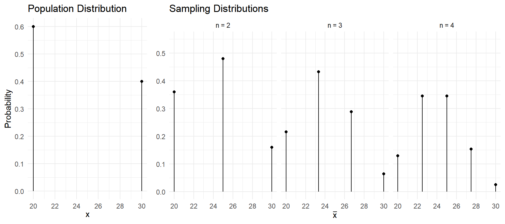
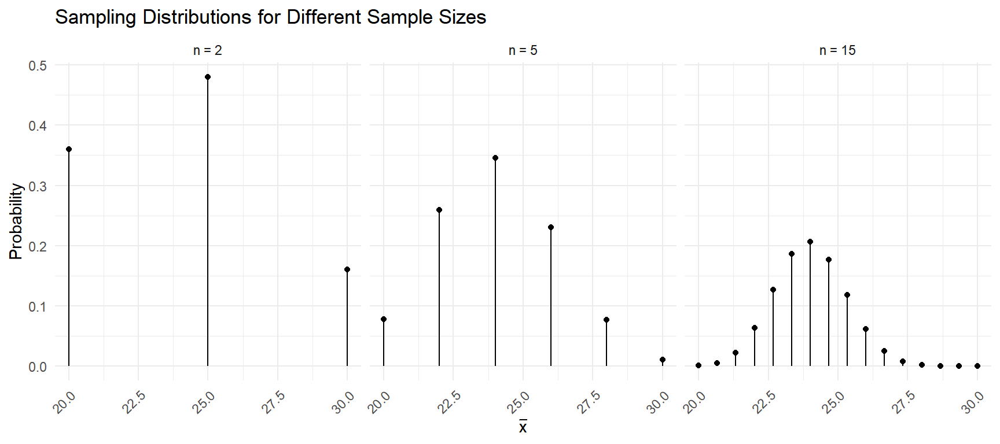
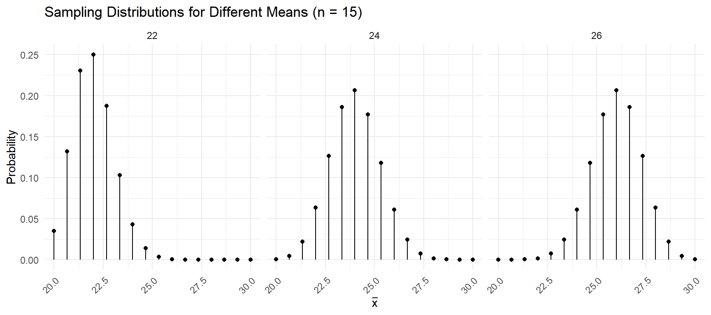
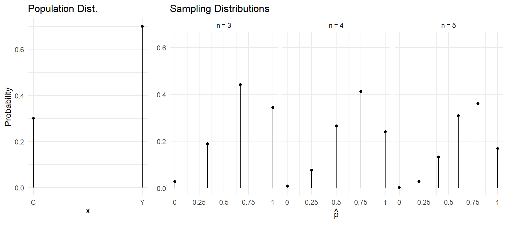
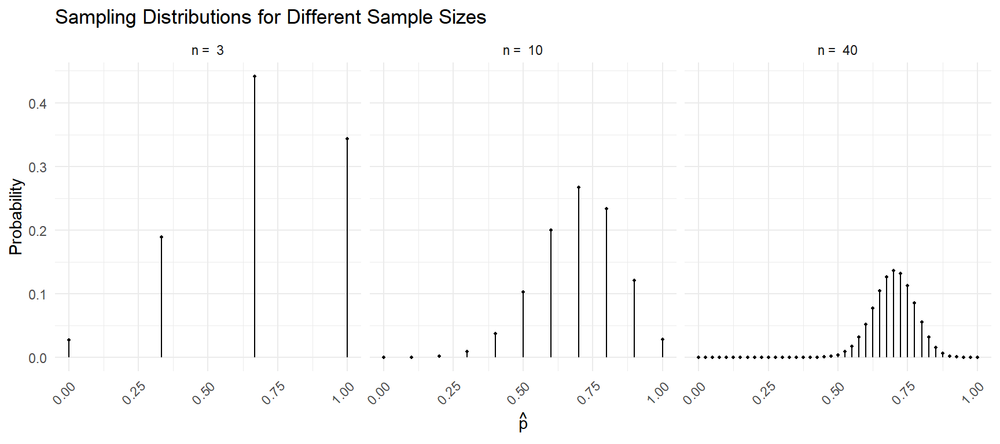
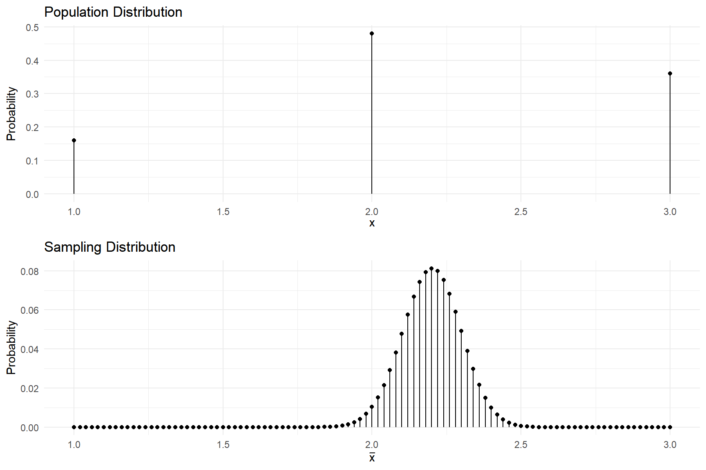
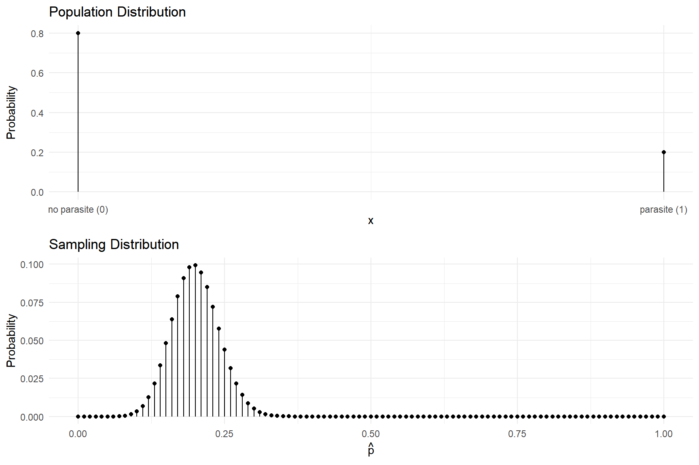

Monday, Feb 7
You can also download a PDF copy of this lecture.
Population and Sampling Distributions
A population distribution is the probability distribution of one observation of a random variable (i.e., \(x\)).
A sampling distribution is the probability distribution of a statistic (e.g., \(\bar{x}\) or \(\hat{p}\)) which is a function of a sample of observations of a random variable (i.e., \(x_1, x_2, \dots, x_n\)).
The sampling distribution depends on (a) the population distribution and (b) the design.
Properties of the Sampling Distribution of \(\bar{x}\)
Assume (a) that we have a population distribution of a quantitative variable \(x\) with mean \(\mu_x\) and standard deviation \(\sigma_x\), and (b) we observe a sample of \(n\) observations and compute the mean (\(\bar{x}\)) from this sample. Note that I will use a subscript on \(\mu\) and \(\sigma\) to make explicit the variable in question.
Example: Consider the following population distribution, and several sampling distributions of \(\bar{x}\) based on samples of \(n\) = 2, 3, or 4 observations.
| \(x\) | \(P(x)\) |
|---|---|
| 20 | 0.6 |
| 30 | 0.4 |
\[\begin{align*} \mu_{x} & = 24 \\ \sigma_{x} & \approx 4.9 \end{align*}\]
| \(\bar{x}\) | \(P(\bar{x})\) |
|---|---|
| 20 | 0.36 |
| 25 | 0.48 |
| 30 | 0.16 |
\[\begin{align*} \mu_{\bar{x}} & = 24 \\ \sigma_{\bar{x}} & \approx 3.46 \end{align*}\]
| \(\bar{x}\) | \(P(\bar{x})\) |
|---|---|
| 20.00 | 0.216 |
| 23.33 | 0.432 |
| 26.67 | 0.288 |
| 30.00 | 0.064 |
\[\begin{align*} \mu_{\bar{x}} & = 24 \\ \sigma_{\bar{x}} & \approx 2.83 \end{align*}\]
| \(\bar{x}\) | \(P(\bar{x})\) |
|---|---|
| 20.0 | 0.1296 |
| 22.5 | 0.3456 |
| 25.0 | 0.3456 |
| 27.5 | 0.1536 |
| 30.0 | 0.0256 |
\[\begin{align*} \mu_{\bar{x}} & = 24 \\ \sigma_{\bar{x}} & \approx 2.45 \end{align*}\]

Mean and Standard Deviation of \(\bar{x}\)
Assume that \(x\) has a mean of \(\mu\) and a standard deviation of \(\sigma\), and assume a sample of \(n\) observations.
- The mean of the \(\bar{x}\) is \(\mu_x\) — i.e., \(\mu_{\bar{x}} = \mu_x\).
- The standard deviation of \(\bar{x}\) is \(\sigma_x/\sqrt{n}\) — i.e., \(\sigma_{\bar{x}} = \sigma_x/\sqrt{n}\)).
Example: Assuming that \(\mu_x\) = 24 and \(\sigma_x \approx\) 4.9, what are the mean and standard deviation of \(\bar{x}\) based on a sample of \(n\) = 16 observations? What about \(n\) = 25 observations?


Properties of the Sampling Distribution of \(\hat{p}\)
Assume (a) that we have a population distribution where \(x\) has only two values, “success” and “failure,” and the probability of a success is \(p\), and assume (b) we observe a sample of \(n\) observations and compute the proportion (\(\hat{p}\)) of observations in the sample that are “successes.”
Example: Consider the following population distribution, and several sampling distributions of \(\hat{p}\) based on samples of \(n\) = 3, 4, or 5 observations.
| \(x\) | \(P(x)\) |
|---|---|
| \(Y\) | 0.7 |
| \(C\) | 0.3 |
Note: Here we define \(Y\) as a “success” because our proportions will be based on the number of \(Y\)’s out of \(n\).
| \(\hat{p}\) | \(P(\hat{p})\) |
|---|---|
| 0 | 0.027 |
| 1/3 | 0.189 |
| 2/3 | 0.441 |
| 1 | 0.343 |
\[\begin{align*} \mu_{\hat{p}} & = 0.7 \\ \sigma_{\hat{p}} & \approx 0.26 \end{align*}\]
| \(\hat{p}\) | \(P(\hat{p})\) |
|---|---|
| 0 | 0.0081 |
| 1/4 | 0.0756 |
| 1/2 | 0.2646 |
| 3/4 | 0.4116 |
| 1 | 0.2401 |
\[\begin{align*} \mu_{\hat{p}} & = 0.7 \\ \sigma_{\hat{p}} & \approx 0.23 \end{align*}\]
| \(\hat{p}\) | \(P(\hat{p})\) |
|---|---|
| 0 | 0.00243 |
| 1/5 | 0.02835 |
| 2/5 | 0.13230 |
| 3/5 | 0.30870 |
| 4/5 | 0.36015 |
| 1 | 0.16807 |
\[\begin{align*} \mu_{\hat{p}} & = 0.7 \\ \sigma_{\hat{p}} & \approx 0.2 \end{align*}\]

Mean and Standard Deviation of \(\hat{p}\)
Assume (a) that we have a population distribution where \(x\) has only two values, “success” and “failure,” and the probability of a success is \(p\), and assume a sample of \(n\) observations.
- The mean of \(\hat{p}\) is \(p\) — i.e., \(\mu_{\hat{p}} = p\).
- The standard deviation of \(\hat{p}\) is \(\sqrt{p(1-p)/n}\) — i.e., \(\sigma_{\hat{p}} = \sqrt{p(1-p)/n}\).
Example: Assuming the population distribution given above with \(p\) = 0.7, what are the mean and standard deviation of \(\hat{p}\) based on a sample of \(n\) = 16 observations? What about \(n\) = 25 observations?


Example: Consider again the trebuchet experiment, but this time with a slightly different population distribution, which is shown below. The mean and standard deviation of \(x\) are \(\mu_x\) = 2.2 and \(\sigma_x\) \(\approx\) 0.69, respectively. A researcher would probably not know \(\mu_x\), but could estimate it by firing the trebuchet to create a sample of observations and use \(\bar{x}\) to estimate \(\mu_x\). The sampling distribution of \(\bar{x}\) based on a sample of \(n\) = 50 observations is also shown below.  What are the mean and the standard deviation of \(\bar{x}\) for such an experiment? Also what is the interval that has approximately a 0.95 probability of containing \(\bar{x}\)?
Example: Imagine a survey of fish in a lake where 20% of the fish in the lake are infected with a parasite. Let \(x\) be whether or not a randomly selected fish has a parasite. The population distribution is shown below. A researcher would probably not know that 20% of the fish in the lake are infected, but could estimate the proportion of infected fish in the lake (0.2) using the proportion of infected fish from a sample of observations (\(\hat{p}\)). The sampling distribution of \(\hat{p}\) based on a sample of \(n\) = 100 observations is also shown below.  What are the mean and standard deviation of \(\hat{p}\) from such a survey? Also what is the interval that has approximately a 0.95 probability of containing \(\hat{p}\)?